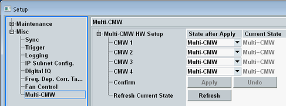

The Multi-CMW node is available if the software is installed on an R&S CMWC.

- Remove an R&S CMW from the multi-CMW setup, so that it can be used standalone
- Add an R&S CMW to the multi-CMW setup, so that it can be used for multi-CMW tests
- Switch the power state of a standalone R&S CMW between standby and ready
To perform one of these actions:
Select the desired target state for CMW 1 to 4 in column "State after Apply".
Press "Apply".
Removing an instrument from the multi-CMW setup or adding an instrument to the setup involves a reboot of the R&S CMWC and of the concerned R&S CMW. This reboot is performed automatically, includes a firmware update and typically takes about 10 minutes. You can speed up the procedure by ensuring that the same software version is installed on the R&S CMWC and on all connected R&S CMW. If you do not add or remove an instrument, only change the power state of an R&S CMW, this action is done without reboot. |
The GUI elements are described in the following.
This column selects the target state of CMW 1 to CMW 4.
"Multi-CMW" | Multi-CMW mode plus ready state That means, the instrument is part of the multi-CMW setup. It cannot be used standalone and it is started up. |
"Standby" | Standalone mode plus standby state That means, the instrument can be used standalone. It cannot be used for multi-CMW tests and it is shut down. |
"Standalone ON" | Standalone mode plus ready state That means, the instrument can be used standalone. It cannot be used for multi-CMW tests and it is started up. |
Displays the current state of CMW 1 to CMW 4.
Press "Refresh" to ensure that the displayed information is up-to-date.
"Multi-CMW" | The instrument is in multi-CMW mode and in ready state. |
"Standby" | The instrument is in standalone mode and in standby state. |
"Standalone ON" | The instrument is in standalone mode and in ready state. |
"Multi-CMW ERROR" | An error occurred so that a state change failed. |
"MCC Not Connected" | There is no MCC connection to the instrument, so the current state cannot be queried or changed. |
"PCIe Not Connected" | There is no PCIe connection to the instrument. |
Applies the changes configured in column "State after Apply".
This action can cause a reboot of the instruments and take some time.
The column "Current State" is refreshed automatically during this procedure.
Remote command:Discards the changes and restores column "State after Apply" to the current states.